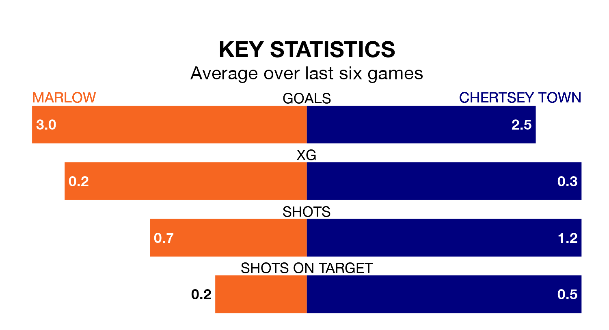

The Isthmian League Division One South Central's top two sides face each other at the Alfred Davis Memorial Ground in Tuesday's late kick-off, when second-placed Marlow host Chertsey Town.
Marlow have picked up 20 wins and two draws from 27 games so far this season, and sit eight points below the visitors going into the 7.45pm match.
The Curfews, meanwhile, have won 22 and drawn four, picking up 70 points.
With 76 goals in 27 games so far this season, Marlow are the league's highest scorers with 2.8 goals per game. And they are conceding fewer than average, letting in 32 goals at a rate of 1.2 per game.
Chertsey are also above average scorers, with 2.7 goals per game, compared to a league average of 1.7. They have conceded 0.7 goals per game.
The home team are in exceptional form in the Isthmian League Division One South Central, with six wins and no losses from their last six games.
And also with six wins and no losses over that period, Town's form is identical – they have both taken 18 points from 18.
In the last 10 years, Marlow and Chertsey have played each other on six occasions. They won three each.
On average, Marlow scored 1.2 goals and the Curfews 1.0 in those matches.
Their last meeting was on February 18 2023, when Marlow won 2-0 away.
Marlow's last match was on Saturday, a 2-0 win against Leatherhead.
Chertsey beat Chipstead 2-1 last time out, also on Saturday.
Updated: 12:18 (UTC), 19/02/24